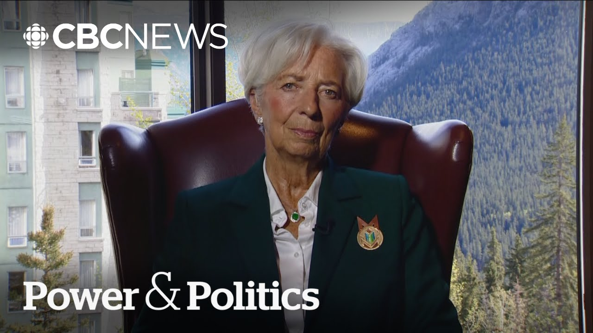

【全球贸易将永远改变，克里斯蒂娜·拉加德表示 | 权力与政治】
Summary: This week's meetings set the stage for next month's leaders' summit, including US President Donald Trump's first visit to Canada since starting his global trade war. Christine Lagarde discusses the G7's stance on tariffs, the need for trade negotiations, and the evolving relationship between Europe and Canada amid economic uncertainty.
摘要： 本周的会议为下月的领导人峰会奠定了基础，包括美国总统特朗普自发起全球贸易战以来首次访问加拿大。克里斯蒂娜·拉加德探讨了七国集团对关税的立场、贸易谈判的必要性，以及在经济不确定性下欧洲与加拿大关系的演变。

⏱️ Estimated Reading Time: 15 min
This week's meetings lay the groundwork for the leaders gathering which takes place next month including US President Donald Trump who is expected to come to Canada for the first time since launching his global trade war.
本周的会议为下月的领导人峰会奠定了基础，包括美国总统特朗普自发起全球贸易战以来首次访问加拿大。
Christine Lagard is the president of the European Central Bank and joins me now from B.
克里斯蒂娜·拉加德是欧洲央行行长，现从B地加入我们的节目。
Uh Madame Lagard thank you for doing this.
拉加德女士，感谢您接受采访。
I I do wonder as these meetings wrap up are the G7 nations emerging from this meeting resolved to the fact that tariffs are going to exist?
我想知道，随着会议结束，七国集团是否已接受关税将长期存在的事实？
they are going to come from one of our biggest trading partners and it is simply an economic fact we're going to have to deal with moving forward.
这些关税将来自我们最大的贸易伙伴之一，这是我们未来必须面对的经济现实。
Well, very glad to be with you.
很高兴与您交谈。
I think that the meetings we just had under Canadian presidency were extremely useful and actually allowed people to understand each others a little bit better.
我认为加拿大主持的这次会议非常有用，确实让大家更深入地理解了彼此。
And uh while it's fairly obvious that international trade will never be the same again, it's also pretty clear that there will be further negotiations that there will be further movements on the part of all partners in the trade uh in order to probably reduce the major imbalances that we have uh at the moment and that we have had for a long time.
尽管国际贸易显然将永远改变，但同样明确的是，各方将进一步谈判和行动，以减少当前及长期存在的主要失衡。
I think the uh the Canadian presidency has been really good at focusing on the key issues and also being uh on on on all the top key developments that will impact our economies going forward.
我认为加拿大作为主席国非常擅长聚焦关键问题，并关注将影响未来经济的重大进展。
I I want to dig into the line you said about the international trade will never be the same.
我想深入探讨您提到的“国际贸易将永远改变”这一观点。
Canadian Prime Minister Mark Carney has repeatedly said that the old relationship with the United States is over and something new will have to emerge from this.
加拿大总理马克·卡尼多次表示，与美国的旧关系已结束，必须建立新的关系。
What is that new relationship?
这种新关系是什么？
What does that look like?
它会是什么样子？
Especially the the relationship between Europe and Canada.
尤其是欧洲与加拿大的关系。
Well, you know, in every threat there is an opportunity and I really believe that uh what um sounded like a complete reshuffleling of the cards as of April the 2nd this year uh has also launched a a complete review of relationships, of trust, of diversification of sources and destination of both products and and and services and of the long-term uh relationship between both the policy makers but also more importantly the economic actors.
您知道，每次危机中都蕴藏机遇。我认为，今年4月2日看似彻底的洗牌，也引发了对关系、信任、产品和服务的来源与目的地多样化，以及政策制定者与经济参与者之间长期关系的全面审视。
You know enterprises are the ones that are going to be directly impacted.
企业将直接受到影响。
consumers are the ones that are going to be directly impacted.
消费者也将直接受到影响。
And the way in which commerce was set up until now was very much based on this free movement, open market uh trade that could go sort of unaffected by a number of tariff and non-tariff barriers because they were so low.
迄今为止的贸易体系很大程度上基于自由流动和开放市场，几乎不受低关税和非关税壁垒的影响。
Now this is clearly changing and I think we have between Canada and Europe we have to you know look at our respective strength weaknesses uh gaps and the agreement under which our relationship has been built uh with as much uh new potential as possible going forward.
现在情况显然在变化。我认为加拿大和欧洲必须审视各自的优势、劣势和差距，并在现有协议基础上挖掘新的合作潜力。
It's one thing to take advantage of those opportunities as you call them when things are going well.
在形势良好时利用这些机会是一回事。
Canada is expected to slip into a recession this year.
加拿大今年可能陷入衰退。
Europe isn't expected to go into a recession, but I think it's less than 1% growth in 2025.
欧洲虽预计不会衰退，但2025年增长率可能低于1%。
What needs to be done to try to take advantage of the opportunities that are presented in what is going to be a tough economic time for both economic regions?
在这两个地区都将面临经济困难时期的情况下，如何利用这些机会？
You know, I think it will be in everybody's interest uh to remove the the level to reduce and hopefully remove uh the level of uncertainty that we have at the moment.
我认为，减少乃至消除当前的不确定性符合各方利益。
It's one thing to have uh tariffs and and it's not, you know, a win-win uh outcome, but it's another thing to have complete uncertainty.
存在关税虽非双赢，但与完全的不确定性是两回事。
And what we are seeing in our economies in Europe is a concern uh an anxiety on the part of economic actors about the rules of the game, about the framework within which they will operate.
我们在欧洲经济中看到的是，经济参与者对游戏规则和运营框架的担忧与焦虑。
And as a result of that their natural reaction is hold, freeze, wait, don't invest, don't lay off, but don't hire either.
因此，他们的自然反应是观望、冻结、等待，既不投资也不裁员，但也不招聘。
So this sort of standstill of our economies is is necessarily bad news uh when it comes to growth, when it comes to jobs, when it comes to uh development of activities, innovation, productivity and what have you.
这种经济停滞对增长、就业、活动发展、创新和生产力等都是坏消息。
So I think that our our collective um objective should be first and foremost remove the uncertainty.
因此，我们的首要集体目标应是消除不确定性。
Second try to negotiate and agree on rules of the game that will be favorable for all parties not just for one party.
其次，努力协商并制定对各方而非单方有利的游戏规则。
And that necessarily requires that there is more diversification that alternatives are considered and that you know solid relationships that maybe we considered as granted or foregrounded uh be be further developed and I think that's very much the case uh for the relationship between Europe and Canada.
这必然要求更多多样化、考虑替代方案，并进一步发展我们曾视为理所当然的稳固关系。欧洲与加拿大的关系正是如此。
Here in Canada, one of the responses to the tariffs has been a resolve to get rid of a lot of the internal trade barriers among provinces.
在加拿大，应对关税的措施之一是决心消除各省间的内部贸易壁垒。
And it ranges from everything from labeling to labor mobility to uh trucking and shipping regulations.
这涵盖从标签、劳动力流动到卡车和航运法规等各个方面。
I wonder what examples you could give of those kinds of things that we can get rid of in the Canada Europe relationship that might speed along trade and get rid of some of that uncertainty that would lead to investment, hiring, and growth.
我想知道，在加拿大与欧洲的关系中，我们可以消除哪些类似障碍以加速贸易、减少不确定性，从而促进投资、招聘和增长？
Well, unfortunately, I'm no longer trade minister, which I used to be way back in 2005.
遗憾的是，我不再是贸易部长——我曾在2005年担任此职。
Uh, but I I know that the European Commission is really working hard at the moment on simplification of labeling of packaging of some of the requirements that are not considered as essential and necessary.
但我知道，欧盟委员会正努力简化包装标签等非必要要求。
And I think that will result in in less red tape and smoother um movement of of goods and services within Europe but also between Europe and its uh its trade partners.
这将减少繁文缛节，促进欧洲内部及与贸易伙伴间货物与服务的流动。
And I hope this is the case between Europe and Canada as well.
我希望欧洲与加拿大之间也能如此。
There is a lot of work to do.
还有很多工作要做。
You know if when I look at you know the the the volume of inertia and the level of barriers that we have erected over the course of time amongst ourselves within Europe it's it's figured at 40 an equivalent of 40% of uh tariff barriers within the European Union which if removed could significantly increase uh our our growth uh in Europe and and we just have to do it.
欧洲内部长期存在的惰性和壁垒相当于40%的关税壁垒，消除这些可显著促进欧洲增长——我们必须行动。
It's it's not something that we were used to.
这不是我们习惯的做法。
It's not something that bureaucrats will enjoy because it's very counterintuitive, but we just have to do it.
官僚们不会喜欢，因为这有违直觉，但我们必须这么做。
You've been through a lot of these meetings before and as you well know, but to remind our audience, a lot of the finance minister, central bank meetings is is a setup to the broader leaders meeting that will take place next month.
您参加过多次此类会议。需提醒观众的是，财长和央行行长会议是为下月更广泛的领导人会议做准备。
You're you're trying to set the parameters for those conversations.
您正试图为这些对话设定框架。
With that in mind, there was a lot of talk coming into this meeting that the non US members would sort of band together to take a position maybe against the United States.
会前有大量讨论称非美国成员可能联合起来对抗美国。
Uh that didn't quite emerge.
但这并未发生。
What does that tell us about where the G7 is and what we can expect to see when the leaders convene next month?
这说明了七国集团的现状？下月领导人会议可能有何结果？
You know, I think the G7 under Canadian presidency has clearly established its credential as a forum for dialogue.
我认为加拿大主持的七国集团已明确其作为对话论坛的定位。
You know those meetings are not intended for uh you know for for a big fight.
这些会议不是为了激烈对抗。
They're intended to lay the grounds, identify the issues, try to resolve some of them u you know sort of lay the ground for leaders then to consolidate agreements to consolidate uh a path towards an agreement.
其目的是奠定基础、明确问题、尝试解决部分问题，为领导人达成协议铺路。
So we are not here to negotiate trade arrangements at all but we are here to identify what the hurdles are, what the objectives are and what the imbalances uh what imbalances have to be addressed in terms of trade, in terms of norms, in terms of measurements.
我们并非在此谈判贸易安排，而是明确障碍、目标及需解决的贸易、规范和衡量标准失衡。
You know, we had long discussions about artificial intelligence, about the cyber risks, about all the sort of the new dimensions of our economies and their developments and how it has to be kept safe and secure in case of ad, you know, adversarial developments.
我们就人工智能、网络风险等经济新维度及其发展进行了长时间讨论，探讨如何确保其在对抗性情况下的安全。
But have we resolved all the trade issues?
但我们是否解决了所有贸易问题？
No, of course not.
当然没有。
Have we agreed that uncertainty is not good for our economy?
我们是否同意不确定性对经济不利？
Absolutely.
绝对同意。
And I hope that leaves the ground for leaders to actually reduce the level of uncertainty and agree that arrangements will be found, settlements will be agreed, that uh that will be propitious for all parties involved.
我希望这为领导人减少不确定性、达成对各方有利的安排奠定基础。
That consolidation that that path toward an agreement that you speak of though requires trust.
您提到的协议之路需要信任。
It requires confidence that these relationships can be relied on.
需要确信这些关系可靠。
Is the American administration, the current American administration reliable in your mind?
您认为当前美国政府可靠吗？
Can you trust the US given that it has imposed tariffs on some of its closest economic and military allies?
在美国对最紧密的经济和军事盟友加征关税的情况下，您能信任美国吗？
I think the future will tell whether agreements can be reached uh whether solutions can be found and whether trust can be u rejuvenated if you will between partners who have been allies for such such a long time.
我认为未来将揭示长期盟友间能否达成协议、找到解决方案并重建信任。
Uh just in closing, I I wonder how much communication you've had with uh with Prime Minister Mark Carney and you know, you you've known him for years.
最后，我想知道您与马克·卡尼总理的沟通频率——您认识他多年。
I wonder how important that relationship is for Canada and Europe going forward.
这一关系对加拿大和欧洲未来有多重要？
Well, we Mark and I have known each other for a long time.
我与马克相识已久。
We've been um companions of of many battles.
我们曾并肩应对多次挑战。
Uh we've won a few, lost a few as well.
有胜有负。
But I I'm certainly thrilled to see that uh he is in the position he is now leading uh the beautiful country of Canada and standing strong and tall uh and and really giving full credit to the uh the the the the Canadian people and the the can Canada as a as a as a country.
但看到他如今领导美丽的加拿大，坚强而自豪地展现加拿大人民的优秀品质，我深感欣喜。
I think it's wonderful and to the extent that our, you know, friendship and our long-standing relationship can be of any help going forward, uh, I will certainly do the best I can to, uh, to facilitate that and I'm sure he will as well.
若我们的友谊和长期关系能对未来有所助益，我定会尽力推动，相信他也会如此。
Did you have direct communication with him before uh, the G7 meetings in B?
七国集团B地会议前，您与他有直接沟通吗？
Uh, yes, I did.
是的。
Yeah.
是的。
You you do you want to disclose what what you what you discussed in those meetings?
您愿意透露会议讨论内容吗？
How you you're obviously talking to to Tiff Mlim and Conwell Fidep Champang.
您显然还与Tiff Mlim和Conwell Fidep Champang交谈过。
What what were you saying to the prime minister?
您对总理说了什么？
Well, this is a private conversation between friends.
这是朋友间的私人对话。
Fair enough.
可以理解。
Uh we're going to leave it there, but Madame Lagard, thank you very much for making the time to speak with us today.
我们就此打住。拉加德女士，非常感谢您抽空接受采访。
My pleasure.
不客气。
All the best.
祝一切顺利。
Thank you.
谢谢。
Christine Lagard, president of the European Central Bank.
欧洲央行行长克里斯蒂娜·拉加德。